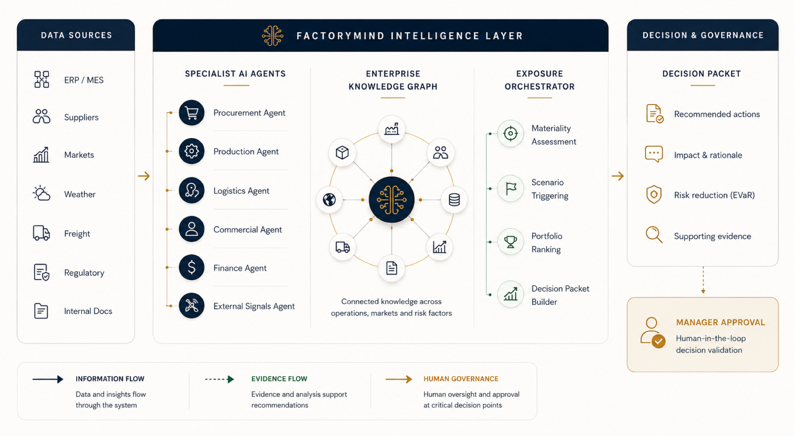

IL PROBLEMA
I grandi produttori gestiscono procurement, produzione, logistica, pianificazione commerciale e finanza attraverso sistemi separati. Anche se ogni dipartimento ha visibilità sulle proprie operazioni, i dirigenti non hanno una vista unificata del rischio aziendale quando devono prendere decisioni strategiche.
PROCESSO AS-IS — CICLO S&OP MENSILE
LA SOLUZIONE
FactoryMind è una piattaforma di Decision Intelligence che trasforma segnali operativi, finanziari e di mercato frammentati in supporto decisionale strutturato. Quantifica l'esposizione aziendale, simula azioni alternative e fornisce raccomandazioni spiegabili — sempre con approvazione umana.
PANORAMICA DELL'ARCHITETTURA

COME FUNZIONA
-
1
Raccogliere e Validare i Segnali
Gli agenti specializzati monitorano continuamente i segnali operativi, finanziari e di mercato.
-
2
Aggiornare il Knowledge Graph
Le informazioni validate vengono archiviate in un grafo aziendale unificato.
-
3
Valutare e Simulare
L'orchestratore valuta la materialità ed esegue simulazioni Monte Carlo.
-
4
Creare il Decision Packet
Le migliori azioni vengono raccolte in un pacchetto decisionale spiegabile e tracciabile.
-
5
Approvazione Umana
I manager rivedono e approvano l'azione raccomandata prima dell'esecuzione.